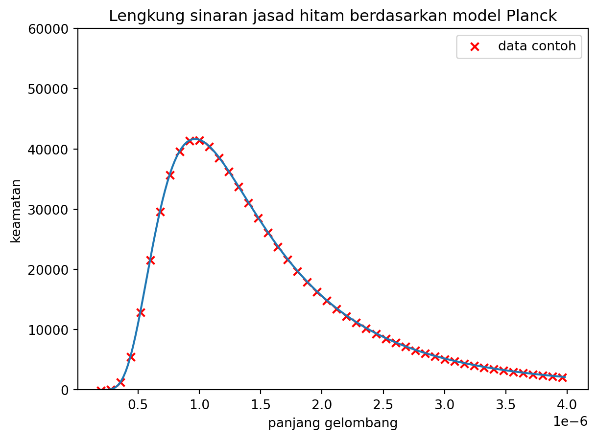

2 Hukum Planck
2.1 Postulat Planck Tentang Sekuantum Cahaya
Penyelesaian kepada masalah ini diberikan oleh Max Planck dengan dua postulat yang dibawanya. Postulat-postulat ini mengandaikan bahawa cahaya bukanlah selanjar seperti gelombang tetapi seperti berketul-ketul seperti zarah. Ternyata, persamaan yang muncul dari postulat ini menghasilkan graf yang selari dengan hasil cerapan.
Postulat Planck
- Tenaga, \(\varepsilon\), yang dipancarkan oleh pengayun-pengayun dalam jasad hitam itu bergantung kepada frekuensi cahaya, \(f\), (\(h\) ialah pemalar) \[ \varepsilon = hf. \]
- Tenaga, \(\varepsilon_n\), yang dipancarkan oleh pengayun-pengayun dalam jasad hitam mempunyai tahap tenaga berhasil darab integer, \[ \varepsilon_n = n\varepsilon,\,n=1,2,3,\cdots \]
2.2 Pemerolehan Hukum Planck
Bagi memperoleh persamaan Planck (Hukum @ref(def:mu-def-05)), kita akan bermula dengan menakrif jumlah tenaga yang dimiliki oleh setiap pengayun serta menakrifkan jumlah pengayunnya.
Usul
Pengayun-pengayun Planck mempunyai tenaga, \(\varepsilon_n\), yang berkadaran terus terhadap frekuensi, \(f\), dan berpekali integer, \(n\), seperti yang dijelaskan dalam dua postulat Planck, \[ \varepsilon_n = nhf \tag{2.1}\]
Jumlah pengayun dalam jasad hitam mematuhi taburan Maxwell–Boltzmann,1 \[ N(n)= N_0\exp\Big\{\frac{-\varepsilon_n}{k_BT}\Big\}, \tag{2.2}\]
dengan maksud bahawa…
| simbol | maksud | nilai |
|---|---|---|
| \(N(n)\) | jumlah pengayun yang mempunyai tenaga \(\varepsilon_n\) | pembolehubah bersandar |
| \(N_0\) | sejenis pemalar | |
| \(\varepsilon_n\) | \(nhf\) | pembolehubah tak bersandar |
| \(k_B\) | pemalar Boltzmann |
Oleh itu, purata tenaga, \(\overline{\varepsilon}\), yang dipancarkan oleh jasad hitam boleh diungkapkan sebagai hasil jumlah tenaga yang dibawa oleh semua pengayun, \(N(n)\varepsilon_n\), dibahagikan dengan jumlah pengayun, \(N(n)\), \[ \overline{\varepsilon} = \frac{\sum_{n=0}^{\infty}N(n)\varepsilon_n}{\sum_{n=0}^{\infty}N(n)}. \tag{2.3}\]
Perhatikan bagaimana penjumlahan ini dilaksanakan. Purata tenaga tersebut dijumlahkan menggunakan penjumlahan (\(\sum\)) dan bukannya pengamiran (\(\int\)). Cuba ingat semula kelas kalkulus tentang makna pengamiran serta perbezaannya dengan penjumlahan.
Pengamiran hanya sah digunakan sekiranya tiada rongga dalam nilai \(n\). Maksudnya, semua nilai dalam julat \([n_1, n_2]\) mempunyai makna. Sifat ketiadaan rongga ini disebut sebagai sifat selajar.
Sebaliknya, penjumlahan hanya sah digunakan sekiranya terdapat rongga dalam nilai \(n\). Maksudnya, nilai pertama dan nilai kedua dipisahkan oleh satu nilai tertentu, katakanlah \(\Delta n\). Dalam kes ini, \(n=1\) dan \(n=2\) dipisahkan oleh \(\Delta n = 1\). Natijahnya, nilai perantara seperti \(n=0.5\) tiada makna dalam penjumlahan ini. Sifat set nilai yang berongga ini disebut sebagai sifat diskret.
Penggunaan penjumlahan pers. 2.3 menonjolkan lagi sifat kediskretan cahaya yang kita sebut berketul-ketul tadi. Ia selari dengan postulat keduanya yang mengatakan bahawa pekali \(n\) ialah nilai integer.
Pers. 2.3 boleh dikembangkan mengikut takrif nilai \(N(n)\) dan \(\varepsilon_n\) yang diberikan sebelum ini, \[ \overline{\varepsilon} = \frac{\sum N_0\exp\Big\{\frac{-nhf}{k_BT}\Big\} nhf}{\sum N_0\exp\Big\{\frac{-nhf}{k_BT}\Big\}}. \tag{2.4}\]
Pekali \(N_0\) dan \(hf\) pula boleh difaktorkan keluar kerana malar dalam hal penjumlahan ini. Kemudian, \(N_0\) di atas dan di bawah boleh dipotong. Pemalar \(\frac{-hf}{k_BT}\) dalam \(\exp\Big\{\frac{-nhf}{k_BT}\Big\}\) akan digantikan dengan \(k\). Pers. 2.3 kini adalah, \[ \overline{\varepsilon} = hf\frac{\sum n e^{nk}}{\sum e^{nk}} \]
Apabila dikembangkan penjumlahannya, kita akan dapat, \[ \overline{\varepsilon} = hf\lim_{N\to\infty}\frac{(0)e^{0k} + (1)e^{1k} + (2)e^{2k} + (3)e^{3k}+\dots+Ne^{Nk}}{e^{0k}+e^{1k}+e^{2k}+e^{3k}+\dots+e^{Nk}}. \tag{2.5}\]
Mari kita perhatikan setiap satu sebutan dalam pecahan tersebut:
Untuk nilai pengangka, sebutan pertamanya ialah sifar maka hanya tinggal sebutan berpekali integer sahaja. Kemudian kita dapati setiap satu sebutan di bahagian atas tersebut mengongsi sebutan sepunya, iaitu \(e^k\). Maka, nilai pengangka tersebut akan menjadi \[ \lim_{N\to\infty}e^k(1+2e^k+3e^{2k}+\cdots+Ne^{(N-1)k}). \]
Untuk nilai pembawah pula, sebutan pertamanya ialah \(e^{0k}=e^0=1\) dan sebutan-sebutan lain tidak mengalami perubahan.
Ini persamaan baharu kita, \[ \overline{\varepsilon} = hfe^k \lim_{N\to\infty} \frac{1+2e^k+3e^{2k}+\dots+Ne^{(N-1)k}}{1+e^k+e^{2k}+e^{3k}+\dots+x^{Nk}} \tag{2.6}\]
Pers. 2.6 menonjolkan dua jenis siri, iaitu siri geometri yang menjadi nilai pembawah pecahan tersebut, dan pembezaan siri geometri yang menjadi nilai pengangkanya.
Petua 2.1 (Siri Geometri) Jika \(x\) dalam \(a + ax + ax^2 + \cdots + ax^N\) mempunyai ciri \(-1<x<1\) dan \(N\to\infty\), maka siri geometrinya adalah, \[ \lim_{N\to\infty}\sum_{n=0}^N ax^n = a\frac{1}{1-x}. \]
Dipetik dari Spiegel, Lipschutz, and Liu (2009): contoh 21.5.
Petua 2.2 (Pembezaan Siri Geometri) Pembezaan siri geometri terhadap \(x\) adalah \[ \frac{\text{d}}{\text{d}x}\sum_{n=0}^{N}ax^n = \sum_{n=0}^{N} anx^{n-1}, \] dengan jumlahnya ialah \[ \lim_{N\to\infty}\sum_{n=0}^{N} anx^{n-1} = a\frac{1}{(1-x)^2}. \]
Dipetik dari Mayer (2006): contoh 12.18.
Nilai \(e^{nk}\) dalam pers. 2.6 menepati syarat petua petua 2.1 dan petua 2.2 kerana \(-1<e^{nk}<1\). Maka, kedua-dua petua ini boleh digunakan. Ganti sahaja \(a=1\) dan \(x=e^k\). Lalu, kita akan peroleh, \[ \overline{\varepsilon} = hfe^k\frac{(1-e^k)^{1}}{(1-e^k)^{2}}, \tag{2.7}\] yang setara dengan, \[ \overline{\varepsilon}= hf\frac{1}{\frac{1}{e^k}-1}. \tag{2.8}\]
Disebabkan \(k\) ialah \(\frac{-hf}{k_BT}\), maka \(\frac{1}{e^k} = e^{\frac{hf}{k_BT}}\). Kita gantikan \(f\) menjadi \(\frac{c}{\lambda}\), \[ \overline{\varepsilon}= \frac{hc}{\lambda}\frac{1}{e^\frac{hc}{\lambda k_BT}-1}. \tag{2.9}\]
Usul
- Ketumpatan pengayun Planck mematuhi Nilai Jeans, \[ n\left(\lambda\right) = \frac{8\pi}{\lambda^4}. \tag{2.10}\]
Ketumpatan tenaga, \(U\) ialah hasil darab nilai Jeans dan pers. 2.9, \[ U=\frac{8\pi hc}{\lambda^5}\frac{1}{e^{\frac{hc}{\lambda k_BT}}-1} \tag{2.11}\]
Mayer, Raymond. 2006. “Numbers: From \(2\cdot0=0\) to \(e^{2\pi i}=1\).” In. Nota Kuliah Math112. http://people.reed.edu/~mayer/math112.html/html2/index.html.
Spiegel, Murray R., Seymour Lipschutz, and John Liu. 2009. Schaum’s Outline of Mathematical Handbook of Formulas and Tables. 3rd ed. McGraw-Hill.
Tatatanda \(\text{exp}\Big\{\frac{-\varepsilon_n}{k_BT}\Big\}\) digunakan untuk menggantikan \(e^{\frac{-\varepsilon_n}{k_BT}}\) supaya pecahan dalam kuasa eksponen itu lebih jelas kelihatan tetapi kedua-duanya mempunyai maksud yang sama.↩︎